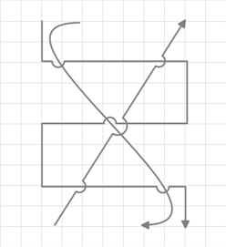

Line Bridging creates a bridge for lines to smartly cross over other line at points of intersection. When two line connectors meets each other, line with higher z-order will draw an arc over the line with lower z-order. Only Straight and Orthogonal Connector type supports line bridging.
Properties
|
Property |
Description |
Type |
Data Type |
Reference Links |
|
LineBridgingEnabled |
Gets or sets a value indicating whether line bridging is enabled. The default value is false. |
Dependency property |
Boolean |
No |
Enabling Line Bridging for a Line connector
To enable line bridging for a line connector, set the LineBridgingEnabled property of ConnectorBase to true. To disable line bridging, set this to false. Default value is false.
Following code illustrates how to enable line bridging for a line connector:
|
[C#] LineConnector l = new LineConnector(); l.LineBridgingEnabled = true;
|
|
[VB] Dim l As New LineConnector() l.LineBridgingEnabled = True
|
Enabling Line Bridging for Diagram View
To enable line bridging for the Diagram View, set the LineBridgingEnabled property of DiagramView to true. To disable line bridging, set this to false. Default value is false.
Following code illustrates how to enable line bridging for the Diagram View:
|
[C#] DiagramView diagramView1 = new DiagramView (); diagramView1.LineBridgingEnabled = true;
|
|
[VB] Dim diagramView1 As New DiagramView () diagramView1.LineBridgingEnabled = True
|
 Note: When LineBridging for DiagramView is enabled
or disabled, LineBridging for all the lines will also be enabled or disabled
respectively. You can change this binding by specifying a value for an
individual LineConnector.
Note: When LineBridging for DiagramView is enabled
or disabled, LineBridging for all the lines will also be enabled or disabled
respectively. You can change this binding by specifying a value for an
individual LineConnector.

Figure 71: Connectors with Line Bridging
Selecting, Moving, Deleting a LineConnector
As this is a general topic to be shared between the Node and
LineConnector, refer the general topics under Concepts and features using the
following links: